the odin-monty toolkit
MRC Centre for Global Infectious Disease Analysis, Imperial College London
2025-09-24
odin - the beginnings (2016-2019)
odincreated to integrate ODEs (e.g. for compartmental models) in R with a domain-specific language (DSL)- Limited support for difference (discrete-time) equations
- Automatic translation to C/C++/JavaScript; efficient solutions in little code
- Used in models of malaria, HIV, ebola and other diseases
- No support for inference
😷 COVID-19 response (2020-2022)
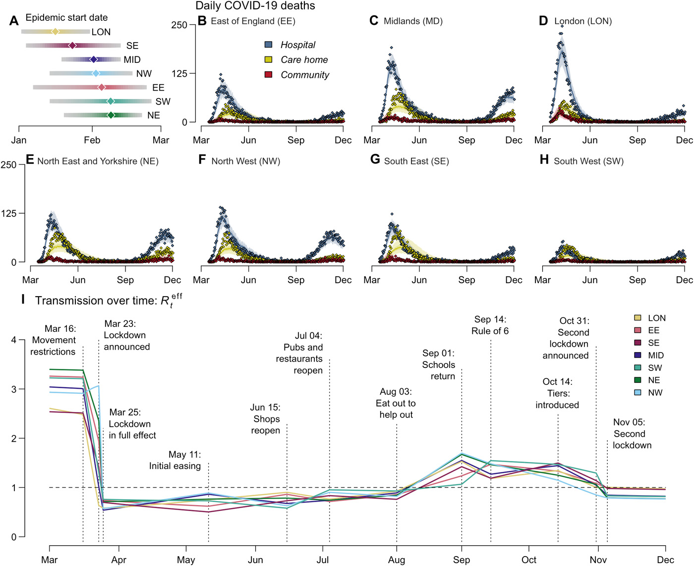
😷 COVID-19 response (2020-2022)
mcstatefor statistical machinery (particle filter, pMCMC)dustfor efficient parallel simulationodin.dustcompileodincode to usedust- Collaborative work by the UK real-time modelling & research software engineers teams at Imperial College
- Many, many, rough edges
New software
- Design of a new architecture, rewiring data, model and parameters
- New statistical interface,
monty- A new small BUGS-inspired DSL for priors
- Works well with
odinmodels, but usable on its own - Modular, and eventually easy to extend
- Fully replaces
mcstate - inverts the dependency stack
Key components
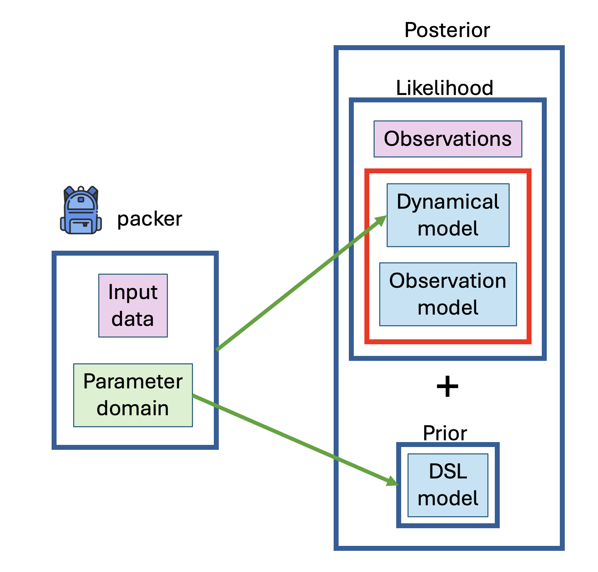
montymodels can be built fromodinand data- custom DSL
- by composition
- Range of samplers available
- Concept of “packer”
An odin-monty demo
We will show:
- how to use
odin2to write and compile some simple models - how to use
dust2to simulate from these - how to use
montyto fit these to data
The data
We have some data on the daily incidence of cases
The data

odin
ODE models
\[\begin{gather*} \frac{dS}{dt} = -\beta S \frac{I}{N}\\ \frac{dI}{dt} = \beta S \frac{I}{N} - \gamma I\\ \frac{dR}{dt} = \gamma I \end{gather*}\]
Things to note:
- out of order definition
- every variable has
initialandderivpair
Compiling the model with odin2
Running the model with dust2
The output has dimensions number of states x number of timepoints
Unpacking states
Output can be nicely unpacked into the different states using dust_unpack_state
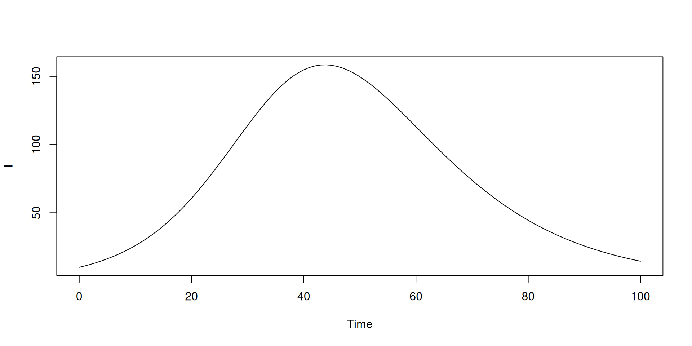
Stochastic models
update(S) <- S - n_SI
update(I) <- I + n_SI - n_IR
update(R) <- R + n_IR
initial(S) <- N - I0
initial(I) <- I0
initial(R) <- 0
p_SI <- 1 - exp(-beta * I / N * dt)
p_IR <- 1 - exp(-gamma * dt)
n_SI <- Binomial(S, p_SI)
n_IR <- Binomial(I, p_IR)
N <- parameter(1000)
I0 <- parameter(10)
beta <- parameter(0.2)
gamma <- parameter(0.1)\[\begin{gather*} S(t + dt) = S(t) - n_{SI}\\ I(t + dt) = I(t) + n_{SI} - n_{IR}\\ R(t + dt) = R(t) + n_{IR} \end{gather*}\]
dtis a special parameter- every variable has
initialandupdatepair
…compared with ODE models
update(S) <- S - n_SI
update(I) <- I + n_SI - n_IR
update(R) <- R + n_IR
initial(S) <- N - I0
initial(I) <- I0
initial(R) <- 0
p_SI <- 1 - exp(-beta * I / N * dt)
p_IR <- 1 - exp(-gamma * dt)
n_SI <- Binomial(S, p_SI)
n_IR <- Binomial(I, p_IR)
N <- parameter(1000)
I0 <- parameter(10)
beta <- parameter(0.2)
gamma <- parameter(0.1)Compiling with odin2
sir <- odin({
update(S) <- S - n_SI
update(I) <- I + n_SI - n_IR
update(R) <- R + n_IR
initial(S) <- N - I0
initial(I) <- I0
initial(R) <- 0
p_SI <- 1 - exp(-beta * I / N * dt)
p_IR <- 1 - exp(-gamma * dt)
n_SI <- Binomial(S, p_SI)
n_IR <- Binomial(I, p_IR)
N <- parameter(1000)
I0 <- parameter(10)
beta <- parameter(0.2)
gamma <- parameter(0.1)
})Running a single simulation

Running multiple simulations
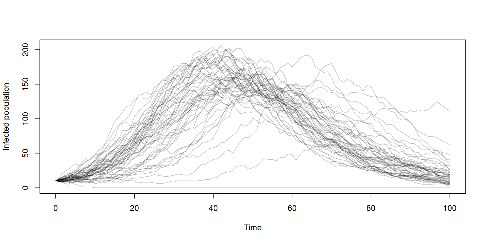
Calculating incidence with zero_every
sir <- odin({
update(S) <- S - n_SI
update(I) <- I + n_SI - n_IR
update(R) <- R + n_IR
update(incidence) <- incidence + n_SI
p_SI <- 1 - exp(-beta * I / N * dt)
p_IR <- 1 - exp(-gamma * dt)
n_SI <- Binomial(S, p_SI)
n_IR <- Binomial(I, p_IR)
initial(S) <- N - I0
initial(I) <- I0
initial(R) <- 0
initial(incidence, zero_every = 1) <- 0
N <- parameter(1000)
I0 <- parameter(10)
beta <- parameter(0.2)
gamma <- parameter(0.1)
})Incidence accumulates then resets
sys <- dust_system_create(sir, pars = list(), dt = 1 / 128)
dust_system_set_state_initial(sys)
t <- seq(0, 20, by = 1 / 128)
y <- dust_system_simulate(sys, t)
y <- dust_unpack_state(sys, y)
plot(t[t %% 1 == 0], y$incidence[t %% 1 == 0], type = "o", pch = 19,
ylab = "Infection incidence", xlab = "Time")
lines(t, y$incidence, col = "red")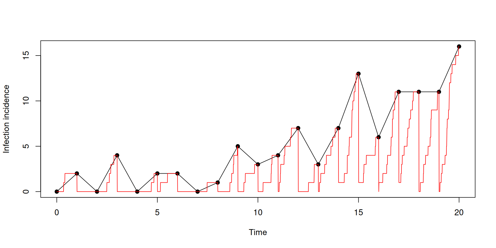
Time-varying inputs: using time
sir <- odin({
update(S) <- S - n_SI
update(I) <- I + n_SI - n_IR
update(R) <- R + n_IR
update(incidence) <- incidence + n_SI
seed <- if (time == seed_time) seed_size else 0
p_SI <- 1 - exp(-beta * I / N * dt)
p_IR <- 1 - exp(-gamma * dt)
n_SI <- min(seed + Binomial(S, p_SI), S)
n_IR <- Binomial(I, p_IR)
initial(S) <- N
initial(I) <- 0
initial(R) <- 0
initial(incidence, zero_every = 1) <- 0
N <- parameter(1000)
beta <- parameter(0.2)
gamma <- parameter(0.1)
seed_time <- parameter()
seed_size <- parameter()
})Time-varying inputs: using interpolate
The interpolate function in odin can be used for time-varying parameters, with specification of
- the times of changepoints
- the values at those changepoints
- the type of interpolation: linear, constant or spline
Time-varying inputs: using interpolate
sir <- odin({
update(S) <- S - n_SI
update(I) <- I + n_SI - n_IR
update(R) <- R + n_IR
update(incidence) <- incidence + n_SI
beta <- interpolate(beta_time, beta_value, "constant")
beta_time <- parameter()
beta_value <- parameter()
dim(beta_time, beta_value) <- parameter(rank = 1)
p_SI <- 1 - exp(-beta * I / N * dt)
p_IR <- 1 - exp(-gamma * dt)
n_SI <- Binomial(S, p_SI)
n_IR <- Binomial(I, p_IR)
initial(S) <- N - I0
initial(I) <- I0
initial(R) <- 0
initial(incidence, zero_every = 1) <- 0
N <- parameter(1000)
I0 <- parameter(10)
gamma <- parameter(0.1)
})Using arrays: model with age and vaccine
sir_age_vax <- odin({
# Equations for transitions between compartments by age group
update(S[, ]) <- new_S[i, j]
update(I[, ]) <- I[i, j] + n_SI[i, j] - n_IR[i, j]
update(R[, ]) <- R[i, j] + n_IR[i, j]
update(incidence) <- incidence + sum(n_SI)
# Individual probabilities of transition:
p_SI[, ] <- 1 - exp(-rel_susceptibility[j] * lambda[i] * dt) # S to I
p_IR <- 1 - exp(-gamma * dt) # I to R
p_vax[, ] <- 1 - exp(-eta[i, j] * dt)
# Force of infection
m <- parameter() # age-structured contact matrix
s_ij[, ] <- m[i, j] * sum(I[j, ])
lambda[] <- beta * sum(s_ij[i, ])
# Draws from binomial distributions for numbers changing between
# compartments:
n_SI[, ] <- Binomial(S[i, j], p_SI[i, j])
n_IR[, ] <- Binomial(I[i, j], p_IR)
# Nested binomial draw for vaccination in S
# Assume you cannot move vaccine class and get infected in same step
n_S_vax[, ] <- Binomial(S[i, j] - n_SI[i, j], p_vax[i, j])
new_S[, 1] <- S[i, j] - n_SI[i, j] - n_S_vax[i, j] + n_S_vax[i, n_vax]
new_S[, 2:n_vax] <- S[i, j] - n_SI[i, j] - n_S_vax[i, j] + n_S_vax[i, j - 1]
initial(S[, ]) <- S0[i, j]
initial(I[, ]) <- I0[i, j]
initial(R[, ]) <- 0
initial(incidence, zero_every = 1) <- 0
# User defined parameters - default in parentheses:
S0 <- parameter()
I0 <- parameter()
beta <- parameter(0.0165)
gamma <- parameter(0.1)
eta <- parameter()
rel_susceptibility <- parameter()
# Dimensions of arrays
n_age <- parameter()
n_vax <- parameter()
dim(S, S0, n_SI, p_SI) <- c(n_age, n_vax)
dim(I, I0, n_IR) <- c(n_age, n_vax)
dim(R) <- c(n_age, n_vax)
dim(m, s_ij) <- c(n_age, n_age)
dim(lambda) <- n_age
dim(eta) <- c(n_age, n_vax)
dim(rel_susceptibility) <- n_vax
dim(p_vax, n_S_vax, new_S) <- c(n_age, n_vax)
})Key features of arrays
- All arrays (whether state variable or parameter) need a
dimequation - No use of
i,jetc on LHS - indexing on the LHS is implicit - Support for up to 8 dimensions, with index variables
i,j,k,l,i5,i6,i7,i8 - Functions for reducing arrays such as
sum,prod,min,max- can be applied over entire array or slices
Fitting odin models with monty
We return to our data on the daily incidence of cases
The data

Our model
Let’s fit these data to our model
sir <- odin({
update(S) <- S - n_SI
update(I) <- I + n_SI - n_IR
update(R) <- R + n_IR
update(incidence) <- incidence + n_SI
p_SI <- 1 - exp(-beta * I / N * dt)
p_IR <- 1 - exp(-gamma * dt)
n_SI <- Binomial(S, p_SI)
n_IR <- Binomial(I, p_IR)
initial(S) <- N - I0
initial(I) <- I0
initial(R) <- 0
initial(incidence, zero_every = 1) <- 0
N <- parameter(1000)
I0 <- parameter(10)
beta <- parameter(0.2)
gamma <- parameter(0.1)
})We will link cases in the data to incidence in the model, and we will treat beta and gamma as unknown parameters to be estimated
Adding likelihood to the model
sir <- odin({
update(S) <- S - n_SI
update(I) <- I + n_SI - n_IR
update(R) <- R + n_IR
update(incidence) <- incidence + n_SI
initial(S) <- N - I0
initial(I) <- I0
initial(R) <- 0
initial(incidence, zero_every = 1) <- 0
p_SI <- 1 - exp(-beta * I / N * dt)
p_IR <- 1 - exp(-gamma * dt)
n_SI <- Binomial(S, p_SI)
n_IR <- Binomial(I, p_IR)
N <- parameter(1000)
I0 <- parameter(10)
beta <- parameter(0.2)
gamma <- parameter(0.1)
cases <- data()
cases ~ Poisson(incidence)
})Calculating likelihood: particle filtering

Calculating likelihood
Filtered trajectories
dust_likelihood_run(filter, list(beta = 0.4, gamma = 0.2),
save_trajectories = TRUE)
#> [1] -87.03677
y <- dust_likelihood_last_trajectories(filter)
y <- dust_unpack_state(filter, y)
matplot(data$time, t(y$incidence), type = "l", col = "#00000044", lty = 1,
xlab = "Time", ylab = "Incidence")
points(data, pch = 19, col = "red")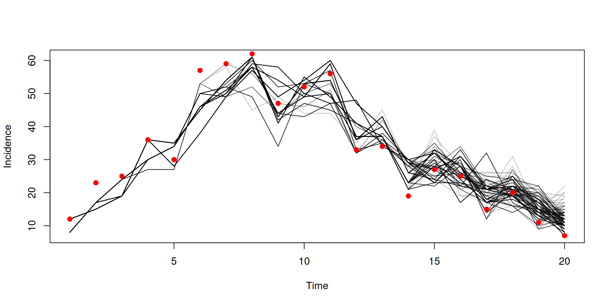
Particle MCMC
So we have a marginal likelihood estimator from our particle filter
How do we sample from beta and gamma?
We need:
- to tidy up our parameters
- to create a prior
- to create a posterior
- to create a sampler
“Parameters”
- Our filter takes a list of
betaandgamma,pars- it could take all sorts of other things, not all of which are to be estimated
- some of the inputs might be vectors or matrices
- Our MCMC takes an unstructured vector \(\theta\)
- we propose a new \(\theta^*\) via some kernel, say a multivariate normal requiring a matrix of parameters corresponding to \(\theta\)
- we need a prior over \(\theta\), but not necessarily every element of
pars
- Smoothing this over is a massive nuisance
- some way of mapping from \(\theta\) to
pars(and back again)
- some way of mapping from \(\theta\) to
Parameter packers
Our solution, “packers”
packer <- monty_packer(c("beta", "gamma"), fixed = list(I0 = 10))
packer
#>
#> ── <monty_packer> ──────────────────────────────────────────────────────────────
#> ℹ Packing 2 parameters: 'beta' and 'gamma'
#> ℹ Use '$pack()' to convert from a list to a vector
#> ℹ Use '$unpack()' to convert from a vector to a list
#> ℹ See `?monty_packer()` for more informationWe can transform from \(\theta\) to a named list:
Priors
Another DSL, similar to odin’s:
This is a “monty model”
prior
#>
#> ── <monty_model> ───────────────────────────────────────────────────────────────
#> ℹ Model has 2 parameters: 'beta' and 'gamma'
#> ℹ This model:
#> • can compute gradients
#> • can be directly sampled from
#> • accepts multiple parameters
#> ℹ See `?monty_model()` for more information
monty_model_density(prior, c(0.2, 0.1))
#> [1] 1.163787From a dust filter to a monty model
Combine a filter and a packer
packer <- monty_packer(c("beta", "gamma"))
likelihood <- dust_likelihood_monty(filter, packer, save_trajectories = TRUE)
likelihood
#>
#> ── <monty_model> ───────────────────────────────────────────────────────────────
#> ℹ Model has 2 parameters: 'beta' and 'gamma'
#> ℹ This model:
#> • is stochastic
#> • has an observer
#> ℹ See `?monty_model()` for more informationHere we specify save_trajectories = TRUE to output the state trajectories at even collected sample.
Posterior from likelihood and prior
Combine a likelihood and a prior to make a posterior
\[ \underbrace{\Pr(\theta | \mathrm{data})}_{\mathrm{posterior}} \propto \underbrace{\Pr(\mathrm{data} | \theta)}_\mathrm{likelihood} \times \underbrace{P(\theta)}_{\mathrm{prior}} \]
posterior <- likelihood + prior
posterior
#>
#> ── <monty_model> ───────────────────────────────────────────────────────────────
#> ℹ Model has 2 parameters: 'beta' and 'gamma'
#> ℹ This model:
#> • can be directly sampled from
#> • is stochastic
#> • has an observer
#> ℹ See `?monty_model()` for more information(remember that addition is multiplication on a log scale)
Create a sampler
A diagonal variance-covariance matrix (uncorrelated parameters)
Use this to create a “random walk” sampler:
Let’s sample!
samples <- monty_sample(posterior, sampler, 1000, n_chains = 3)
samples
#>
#> ── <monty_samples: 2 parameters x 1000 samples x 3 chains> ─────────────────────
#> ℹ Parameters: 'beta' and 'gamma'
#> ℹ Conversion to other types is possible:
#> → ! posterior::as_draws_array() [package installed, but not loaded]
#> → ! posterior::as_draws_df() [package installed, but not loaded]
#> → ✖ coda::as.mcmc.list() [package missing]
#> ℹ These samples have associated observations
#> ℹ See `?monty_sample()` and `vignette("samples")` for more informationThe result: diagnostics
Diagnostics can be used from the posterior package
## Note: as_draws_df converts samples$pars, and drops anything else in samples
samples_df <- posterior::as_draws_df(samples)
posterior::summarise_draws(samples_df)
#> # A tibble: 2 × 10
#> variable mean median sd mad q5 q95 rhat ess_bulk ess_tail
#> <chr> <dbl> <dbl> <dbl> <dbl> <dbl> <dbl> <dbl> <dbl> <dbl>
#> 1 beta 0.845 0.832 0.130 0.117 0.670 1.07 1.05 57.2 45.9
#> 2 gamma 0.537 0.511 0.108 0.0882 0.401 0.704 1.07 79.7 66.2The results: parameters
You can use the posterior package in conjunction with bayesplot (and then also ggplot2)
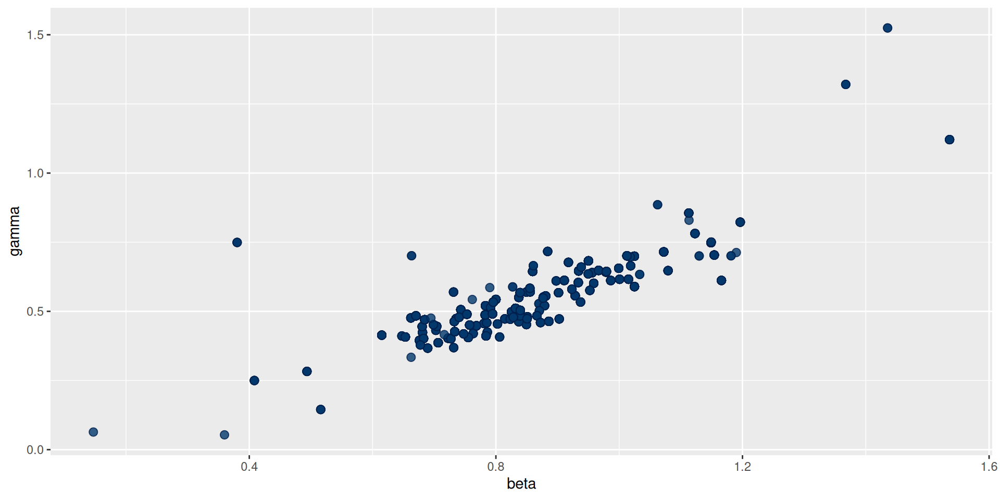
The result: traceplots
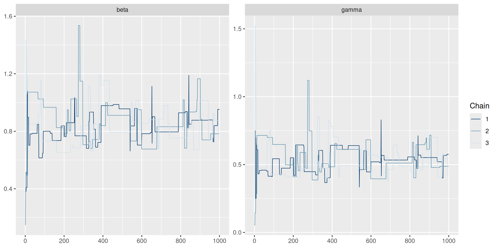
The result: density over time
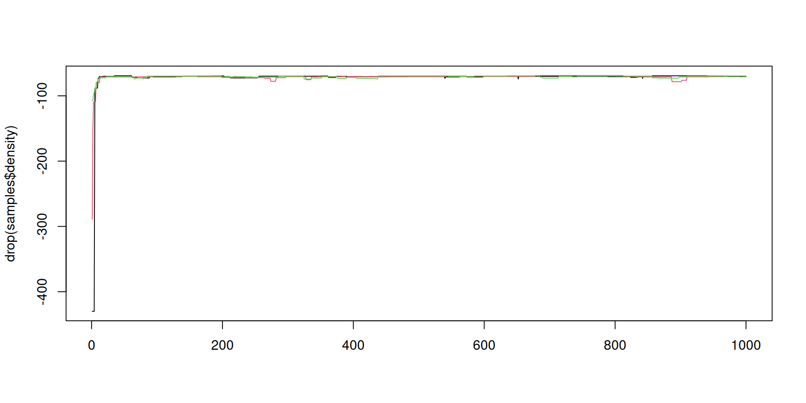
The result: density over time
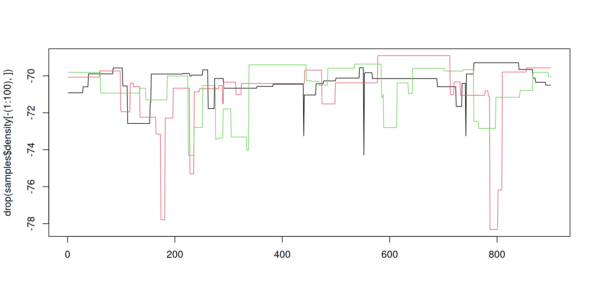
Better mixing
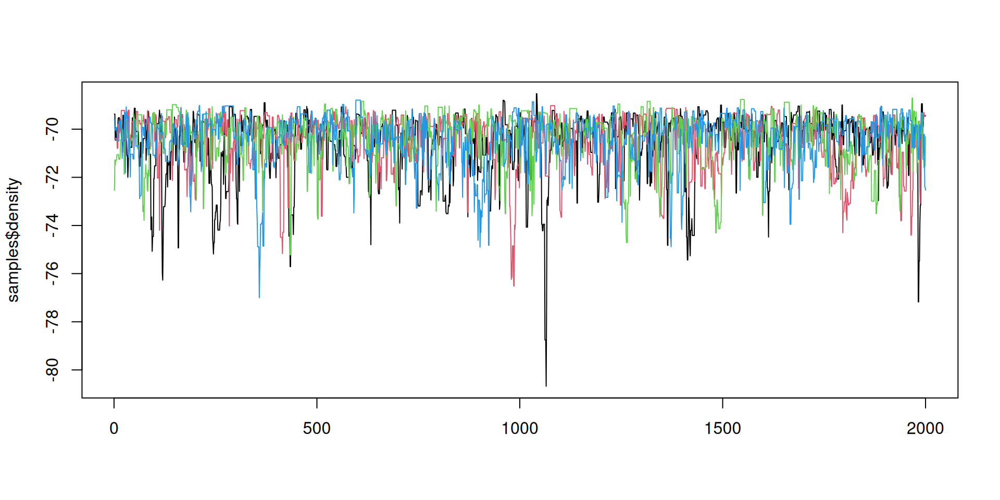
Better mixing: the results
samples_df <- posterior::as_draws_df(samples)
posterior::summarise_draws(samples_df)
#> # A tibble: 2 × 10
#> variable mean median sd mad q5 q95 rhat ess_bulk ess_tail
#> <chr> <dbl> <dbl> <dbl> <dbl> <dbl> <dbl> <dbl> <dbl> <dbl>
#> 1 beta 0.853 0.838 0.123 0.117 0.675 1.08 1.01 495. 741.
#> 2 gamma 0.538 0.526 0.0980 0.0914 0.400 0.713 1.00 462. 617.Better mixing: the results
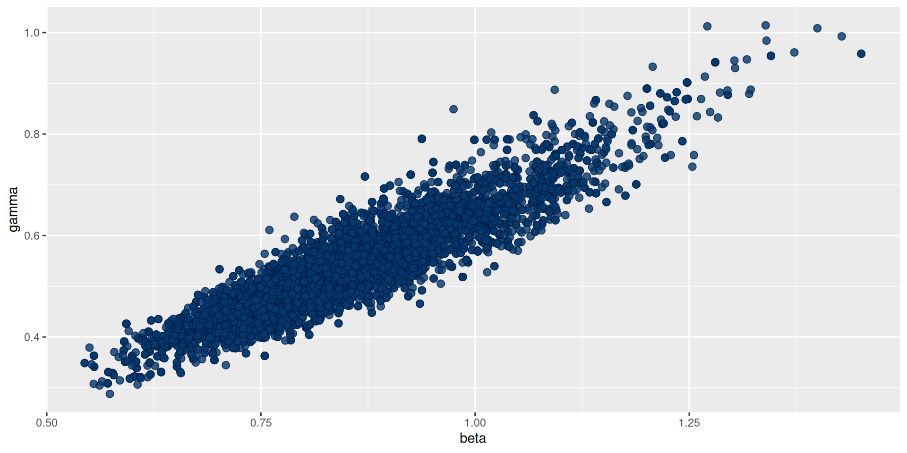
Better mixing: the results
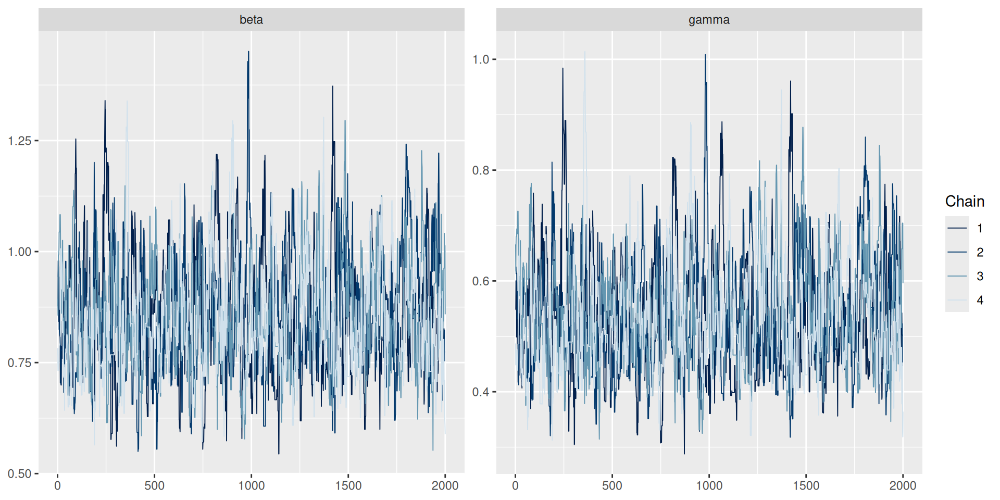
Trajectories
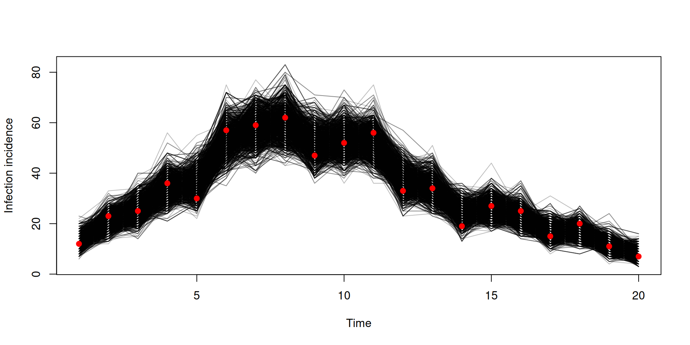
Trajectories
Trajectories are 4-dimensional
These can get very large quickly - there are two main ways to help reduce this:
- Saving only a subset of the states
- Thinning (can be done while running or after running)
Pipeline summary
- Write model including likelihood and compile with
odin2 - Build filter using data and compiled model with
dust2 - Create packer with
monty - Create monty likelihood object using filter and packer with
dust2 - Create prior with
montyDSL - Combine prior and likelihood models
- Create sampler
- Run sampler with
monty_sample
Deterministic models from stochastic
- Stochastic models written in odin, can be run deterministically
- Runs by taking the expectation of any random draws
- This gives two models for the price of one
- However it might not be suitable for all models
Fitting in deterministic mode
The key difference is to use dust_unfilter_create
Note as this is deterministic it produces the same likelihood every time
Fitting in deterministic mode
Stochastic v deterministic comparison
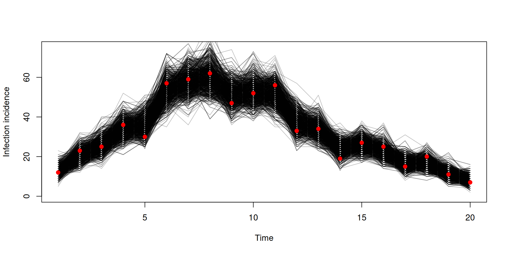
Stochastic v deterministic comparison
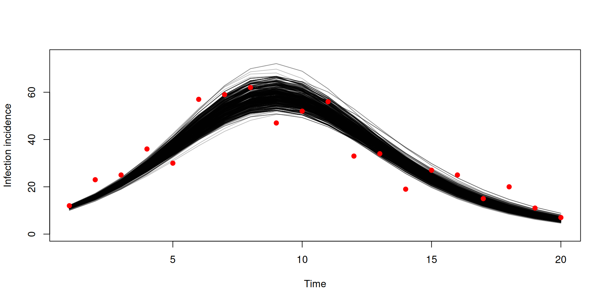
Stochastic v deterministic comparison
pars_stochastic <- array(samples$pars, c(2, 500))
pars_deterministic <- array(samples_det$pars, c(2, 500))
plot(pars_stochastic[1, ], pars_stochastic[2, ], ylab = "gamma", xlab = "beta",
pch = 19, col = "blue")
points(pars_deterministic[1, ], pars_deterministic[2, ], pch = 19, col = "red")
legend("bottomright", c("stochastic fit", "deterministic fit"), pch = c(19, 19),
col = c("blue", "red"))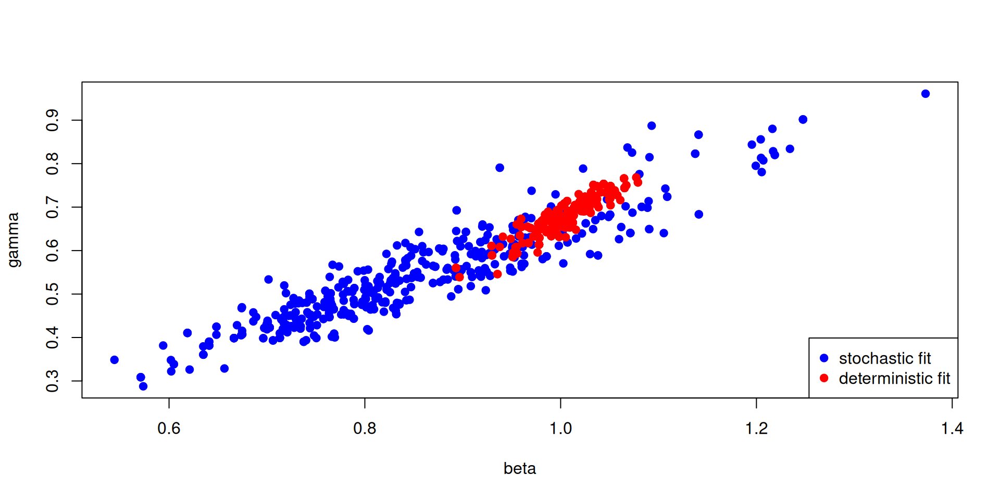
Projections and counterfactuals
- Save the final state at every sample (for onward simulation)
- Save snapshots at intermediate timepoints of the state at every sample (for counterfactuals)
Example implementation of both of these can be found here
Parallelism
Two places to parallelise
- among particles in your filter
- between chains in the sample
e.g., 4 threads per filter x 2 workers = 8 total cores in use
These are both straightforward to setup, a demonstration can be found here
Advanced monty: parallel tempering
Motivating example: likelihood is a mixture of normals model
prior is a normal distribution with a wider variance
Advanced monty: parallel tempering
posterior is the product of the two (the sum on a log-scale)
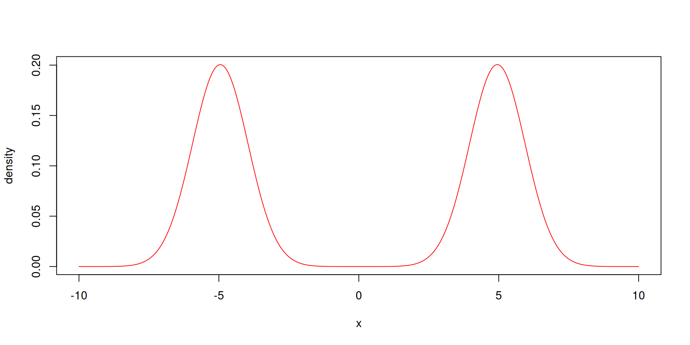
Advanced monty: parallel tempering
Try a random walk Metropolis-Hastings sampler for this model
Advanced monty: parallel tempering
Only one mode has been explored
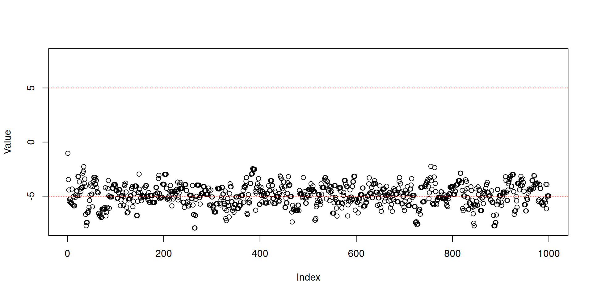
Advanced monty: parallel tempering
Multiple chains does not solve the issue
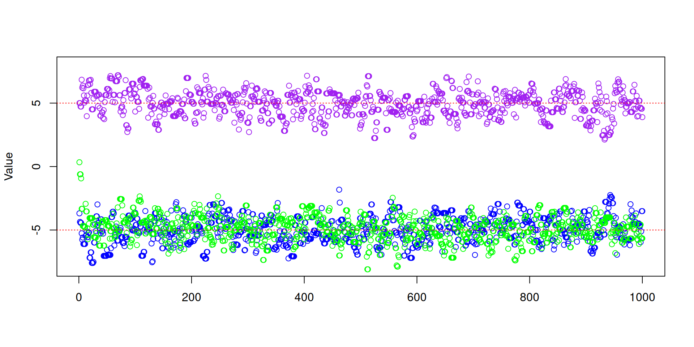
Advanced monty: parallel tempering
Parallel tempering helps solve such problems
- Multiple chains run at different “temperatures”
- states of the chains can be swapped periodically
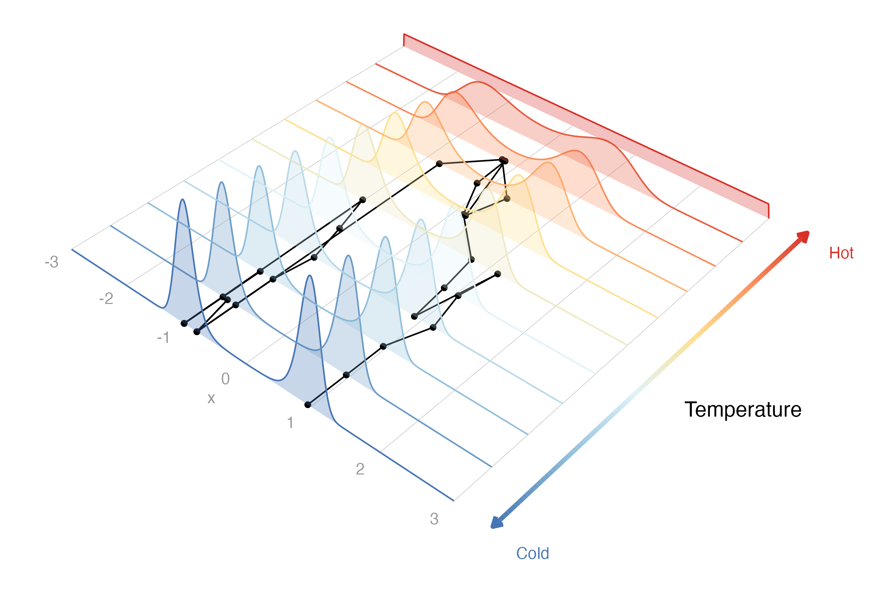
Advanced monty: parallel tempering
Use our RW sampler within the parallel tempering sampler
Advanced monty: parallel tempering
Parallel tempering helps us explore both modes
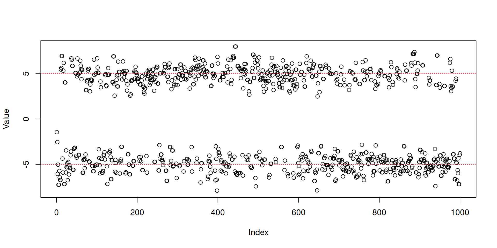
Other monty samplers
- Adaptive random walk Metropolis-Hastings
- model must be deterministic
- Hamiltonian Monte Carlo
- model must be differentiable, odin models not supported
- Build your own sampler
montywill handle bookkeeping and parallelism
Future roadmap
- NUTS (No U-Turn Sampler) algorithm
montysupport for augmented data- nested sampler for nested models
- fitting multiple regions together
- some parameters are regional, some shared
- regions independent given shared parameters
- alternate between updates of the regional parameters (can be done independently) and shared parameters (must be done jointly)
Acknowledgements
- Rich Fitzjohn
- Marc Baguelin
Resources
- You can find more in our online
odin&montybook: https://mrc-ide.github.io/odin-monty/ - Users of the old versions of the packages may find the migration documentation useful:
odintoodin2: https://mrc-ide.github.io/odin2/articles/migrating.htmldusttodust2: https://mrc-ide.github.io/dust2/articles/migrating.htmlmcstatetomonty: https://mrc-ide.github.io/monty/articles/migration.html
- If you want to highlight a potential bug, we suggest posting it as an issue on one of the Github repos
- You can use the Discussions page on the
odin-montyrepo: https://github.com/mrc-ide/odin-monty/discussions